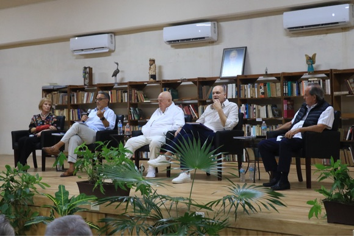

[n]
Series de podcasts
Shows de podcast activos
Bienvenido, [correo del administrador]
Vista general del contenido del sitio
Shows de podcast activos
Imágenes gestionadas en el sitio
Textos configurables
Libros descargados
Últimas actualizaciones en el sitio
Dashboard de actividad en desarrollo
Administra las series de podcasts y sus imágenes


Todas las imágenes del sitio web y dónde se usan
Categoría: Portada de libro
Categoría: Portada de libro
Categoría: Portada de libro

Categoría: Encabezado

Categoría: Encabezado

Categoría: Encabezado
Administra los textos del sitio web
[clave-única][categoría]ES
[Texto del contenido]
[clave-única][categoría]EN
[Texto del contenido]